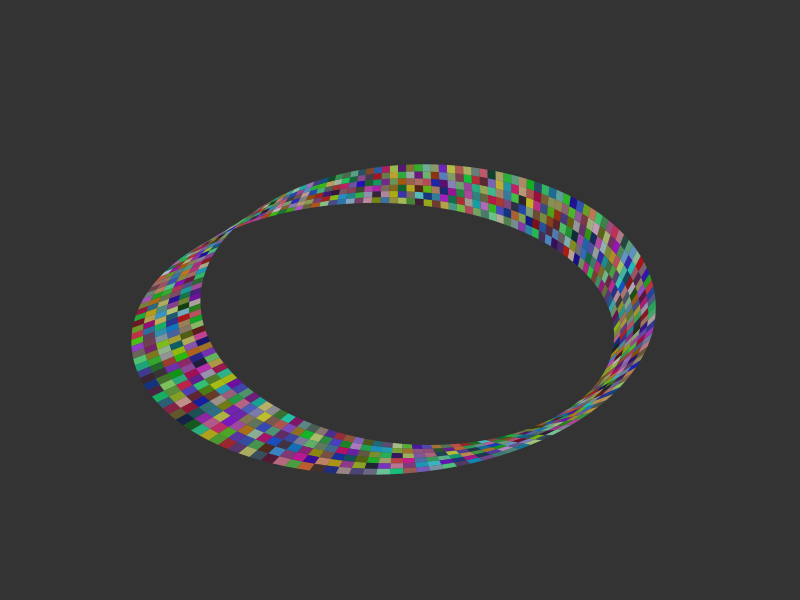
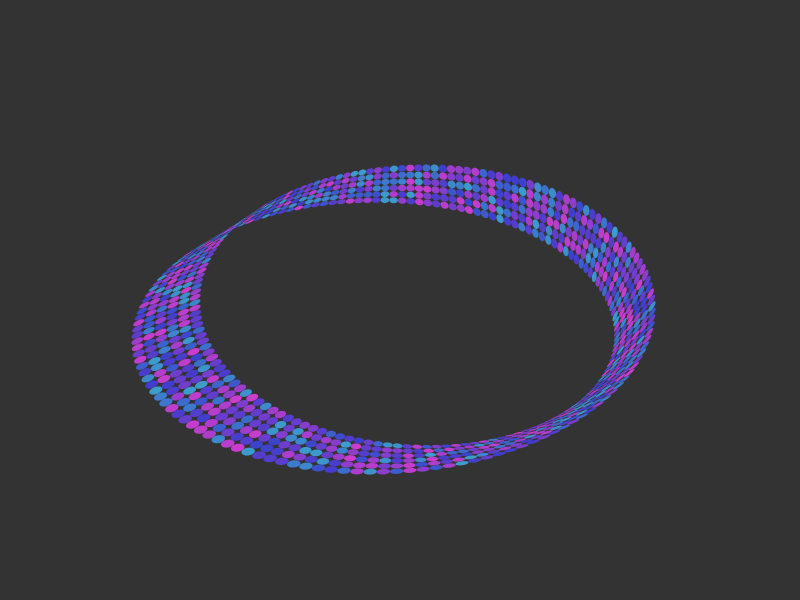
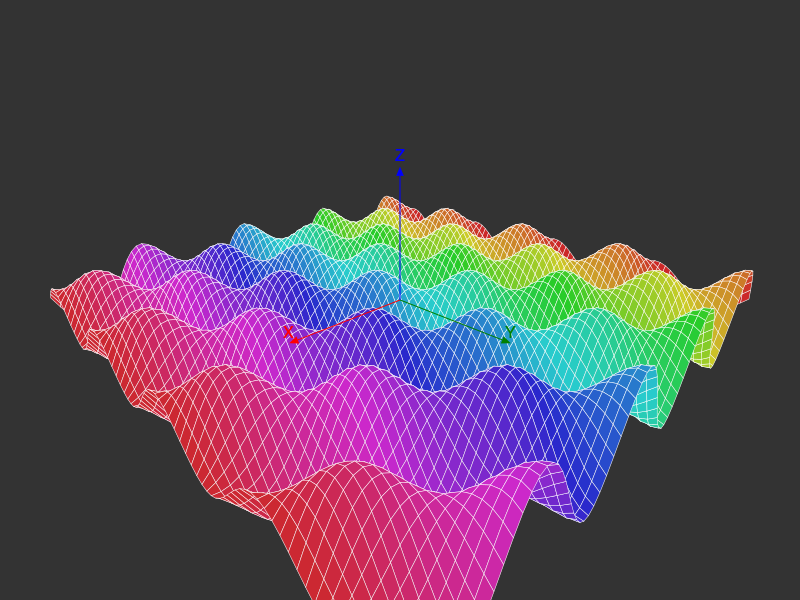

Polygons and planes
The pin() function accepts an array of 3D points as well as singletons and pairs. In this case, the default graphical treatment is to apply the Luxor.poly(... :stroke) function to the array of projected 2D points.
Möbius
function makemobius(; w = π/10, # "width" stepsacross=6, # steps across the band stepsaround=150) # steps round the band x(u, v) = (1 + (v/2 * cos(u/2))) * cos(u) y(u, v) = (1 + (v/2 * cos(u/2))) * sin(u) z(u, v) = v/2 * sin(u/2) st = 2π/stepsaround Δ = 2w/stepsacross result = Vector{Vector{Point3D}}() for i in 1:stepsaround u = (i - 1) * st for j in 1:stepsacross v = -w + (j - 1) * Δ p1 = Point3D(x(u, v + Δ), y(u, v + Δ), z(u, v + Δ)) p2 = Point3D(x(u + st, v + Δ), y(u + st, v + Δ), z(u + st, v + Δ)) p3 = Point3D(x(u + st, v), y(u + st, v), z(u + st, v)) p4 = Point3D(x(u, v), y(u, v), z(u, v)) push!(result, [p1, p2, p3, p4]) end end return resultend# ... on a drawing@drawsvg begin background("grey20") eyepoint(300, 300, 300) perspective(1200) setopacity(0.7) sethue("white") setline(0.4) mb = makemobius() for pgon in mb randomhue() pin(100pgon, gfunction = (p3, p2) -> poly(p2, :fill)) endend 800 600
This isn’t always going to be correct - although three 3D points always define a flat face in a 2D plane, more than three points don’t always do so.
The default action when pin() is called on a list of Point3Ds is poly(pts, fill), once the Point3Ds have been projected into 2D space as pts.
You can also pass a gfunction. It should accept two arguments: a list of Point3Ds and a list of Points. For example, this calls Luxor's poly() function on the list of 2D points in p2 that are the projections of the Point3Ds in pgon.
pin(pgon,
gfunction = (p3list, p2list) -> begin
poly(p2list, close=true, :fill)
end)In this example, the gfunction draws colored circles inside each square:
function makemobius(; w = π/10, # "width" stepsacross=6, # steps across the band stepsaround=150) # steps round the band x(u, v) = (1 + (v/2 * cos(u/2))) * cos(u) y(u, v) = (1 + (v/2 * cos(u/2))) * sin(u) z(u, v) = v/2 * sin(u/2) st = 2π/stepsaround Δ = 2w/stepsacross result = Vector{Vector{Point3D}}() for i in 1:stepsaround u = (i - 1) * st for j in 1:stepsacross v = -w + (j - 1) * Δ p1 = Point3D(x(u, v + Δ), y(u, v + Δ), z(u, v + Δ)) p2 = Point3D(x(u + st, v + Δ), y(u + st, v + Δ), z(u + st, v + Δ)) p3 = Point3D(x(u + st, v), y(u + st, v), z(u + st, v)) p4 = Point3D(x(u, v), y(u, v), z(u, v)) push!(result, [p1, p2, p3, p4]) end end return resultend# ... in a drawing@drawsvg begin background("grey20") eyepoint(300, 300, 300) perspective(1200) mb = makemobius() for (n, pgon) in enumerate(mb) pin(100pgon, gfunction = (p3list, p2list) -> begin sethue(HSB(rand(200:300), 0.7, 0.8)) ellipseinquad(p2list, action=:fill) end) endend 800 600
Surfaces
A surface plot like the following also works quite well, mainly because each new polygon hides the ones behind it. Although it's reallythen a waste of time to draw polygons and hide them completely with other polygons.
@draw begin background("grey20") perspective(500) eyepoint(500, 500, 300) k = 30 xmax = 4π ymax = 4π st = 0.3 f(x, y) = 2(sin(x) * cos(y)) + (cos(x) * sin(y)) sethue("blue") setline(0.5) for x in -xmax:st:xmax for y in -ymax:st:ymax sethue(HSB(360rescale(x, -xmax, xmax), 0.8, 0.8)) p1 = Point3D(k * x, k * y, k * f(x, y)) p2 = Point3D(k * x, k * (y + st), k * f(x, y + st)) p3 = Point3D(k * (x + st), k * (y + st), k * f(x + st, y + st)) p4 = Point3D(k * (x + st), k * y, k * f(x + st, y)) pin([p1, p2, p3, p4], gfunction=(p3s, p2s) -> begin poly(p2s, close=true, :fill) sethue("white") poly(p2s, close=true, :stroke) end) end end axes3D(200)end 800 600